Cum îți organizezi task-urile, cum lucrezi pe cele primite de la colegi și cum transformi emailurile în task-uri.
Taskel este aplicația în care ții evidența lucrurilor de făcut: ale tale, cele pe care le dai colegilor și cele pe care le primești de la ei sau din email.
Acest manual este pentru oricine are un cont în Taskel. Descrie tot ce poate face un cont cu rolul Utilizator. Managerii și administratorii pot face în plus alte lucruri, descrise în manualele lor; tot ce scrie aici li se aplică și lor.
| Termen | Ce înseamnă |
|---|---|
| Creator | Persoana care a adăugat task-ul. Rămâne „proprietarul” lui: îl poate modifica, realoca și șterge oricând. |
| Responsabil | Persoana la care se află task-ul acum și care lucrează la el. |
| Task delegat | Un task creat de tine și dat altcuiva (unei persoane sau unui grup). |
| Task direcționat | Un task primit de tine și dat mai departe altcuiva. Nu mai este la tine, dar îl poți citi. |
| Grup | O listă de persoane. Un task dat unui grup îl văd toți membrii, până îl preia unul dintre ei. |
Deschide adresa aplicației primită de la administrator (de exemplu https://taskel.firma.ro) într-un browser actual: Chrome, Edge, Firefox sau Safari. Aplicația funcționează și pe telefon și tabletă.
În funcție de configurarea făcută de administrator, ai una sau mai multe dintre aceste posibilități:
| Mod de conectare | Cum procedezi |
|---|---|
| Autentificare unică (Keycloak) | Apeși butonul Conectează-te cu …. Ești dus pe pagina de autentificare a firmei, introduci acolo datele, apoi revii automat în Taskel. |
| Cont de domeniu | Pe fila Cont de domeniu introduci utilizatorul de Windows (de exemplu ion.popescu) și parola de Windows. |
| Cont local | Pe fila Cont local introduci adresa de email și parola contului Taskel. |
Dacă sub formular apare Nu ai încă un cont? Creează unul, îți poți face singur un cont: introduci adresa de email și o parolă de cel puțin 8 caractere. Dacă linkul nu apare, conturile se creează doar de către administrator sau prin contul de domeniu ori Keycloak.
| Mesaj | Ce faci |
|---|---|
| Email sau parolă greșită / Nume de utilizator sau parolă greșită | Verifică datele și fila aleasă. Conturile de domeniu nu se pot conecta pe fila „Cont local”. |
| Prea multe încercări de conectare | Așteaptă un minut și încearcă din nou. |
| Active Directory nu este disponibil acum | Serverul de domeniu nu răspunde. Încearcă mai târziu sau anunță administratorul. |
| Contul tău din Keycloak nu are acces la Taskel | Cere administratorului rolul necesar. |
| Există deja un cont local cu adresa ta… | Adresa ta de email trebuie verificată în Keycloak. Anunță administratorul. |
După conectare ajungi pe Acasă. Ecranul are două zone: meniul din stânga și conținutul vederii alese.
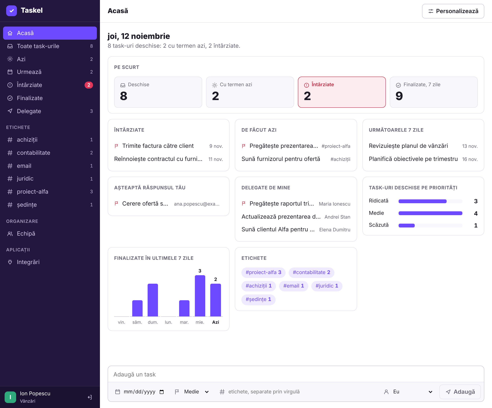
| Vedere | Ce arată |
|---|---|
| Acasă | Rezumatul: câte task-uri ai deschise, ce e de făcut azi, ce a întârziat, ce urmează. |
| Toate task-urile | Tot ce ai de făcut tu: task-urile tale și cele alocate ție. |
| Azi | Task-urile deschise cu termen azi. |
| Urmează | Task-urile deschise cu termen în viitor. |
| Întârziate | Task-urile deschise cu termenul depășit. Numărul apare cu roșu. |
| Finalizate | Ce ai terminat. |
| De preluat | Task-uri date unui grup din care faci parte și pe care nu le-a luat încă nimeni. |
| Delegate | Task-uri create de tine și date altcuiva. |
| Direcționate | Task-uri primite de tine și date mai departe. |
| Etichete | Câte o vedere pentru fiecare etichetă pe care ai folosit-o. |
| Integrări | Notificările pe email și legătura cu Outlook. |
Numărul din dreptul unei vederi arată câte task-uri deschise conține. Jos, în meniu, alegi tema de culori și te deconectezi.
Dacă ai task-uri întârziate sau cu termen azi, la deschiderea aplicației apare o fereastră care le enumeră, cu scurtături către vederile respective. Apare o singură dată la fiecare vizită și o poți opri din Acasă → Personalizează.
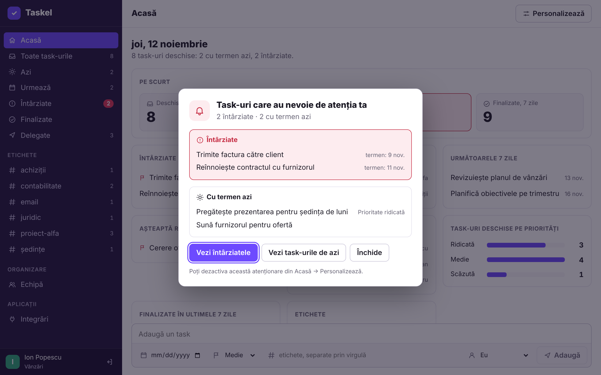
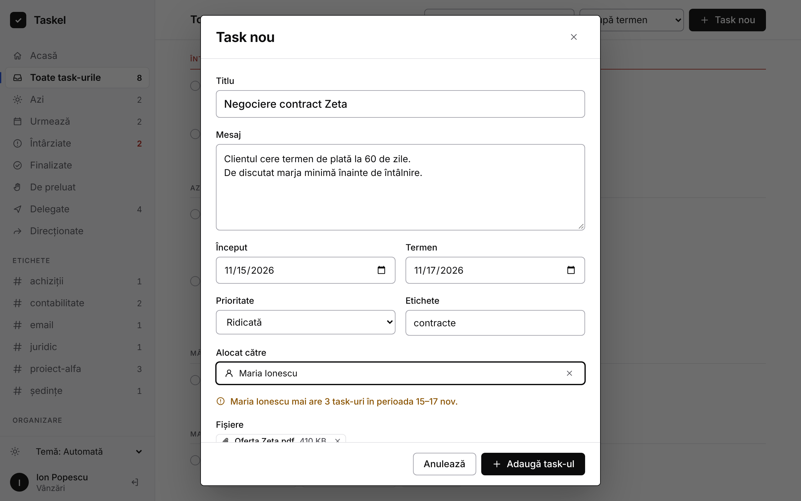
| Câmp | Explicație |
|---|---|
| Titlu | Ce este de făcut, pe scurt. Cel mult 200 de caractere. Este ce se vede în liste. |
| Mesaj | Detalii, context, pași. Cel mult 2000 de caractere. Se vede când deschizi task-ul. |
| Început | Opțional. Prima zi a intervalului în care se lucrează la task. Fără el, task-ul are doar termen. |
| Termen | Ultima zi. După această zi, task-ul nefinalizat apare la Întârziate. |
| Prioritate | Scăzută, Medie (implicit) sau Ridicată. |
| Nivel | Opțional, de la 1 la 20: locul task-ului în ziua lui (1 e primul). Într-o zi nu poți avea două task-uri deschise cu același nivel: dacă alegi un nivel ocupat, task-ul care îl avea coboară cu o poziție (și cele de sub el, până la primul nivel liber). Dacă un task ar trece de 20, Taskel îți cere alt nivel. În liste, fiecare zi e ordonată după nivel; nivelul apare într-un pătrat închis la culoare înaintea titlului. |
| Etichete | Cuvinte separate prin virgulă, de exemplu contabilitate, proiect-alfa. Cel mult 10 etichete a câte 30 de caractere. Fiecare etichetă devine o vedere în meniu. |
| Alocat către | Cine face task-ul. Implicit „Eu”. Vezi capitolul Lucrul cu colegii. |
| Fișiere | Documente atașate. Implicit, cel mult 100 MB pe fișier și 20 de fișiere pe task (administratorul poate schimba limita de mărime). |
Orice vedere din meniu (în afară de Acasă și Integrări) este o listă. În listă apar doar titlurile, cu câteva informații esențiale; restul se vede când deschizi task-ul.
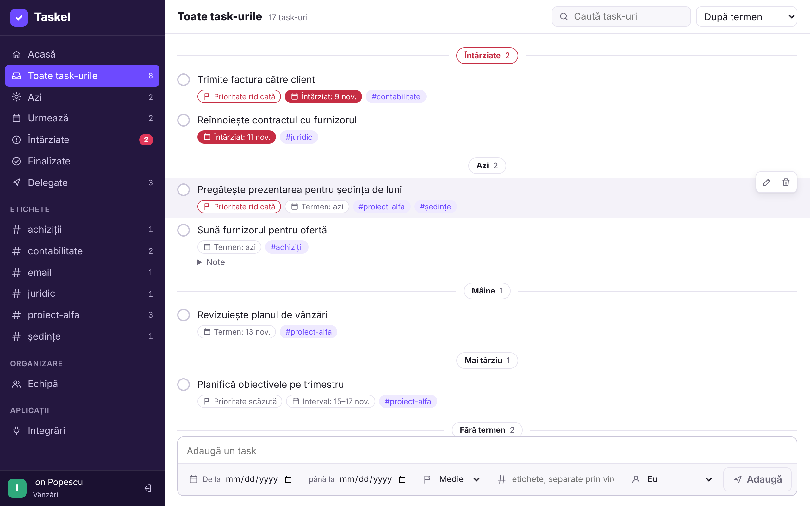
Un clic oriunde pe rând deschide task-ul.
Un task se deschide ca un fir de mail, la fel ca într-o aplicație de email:
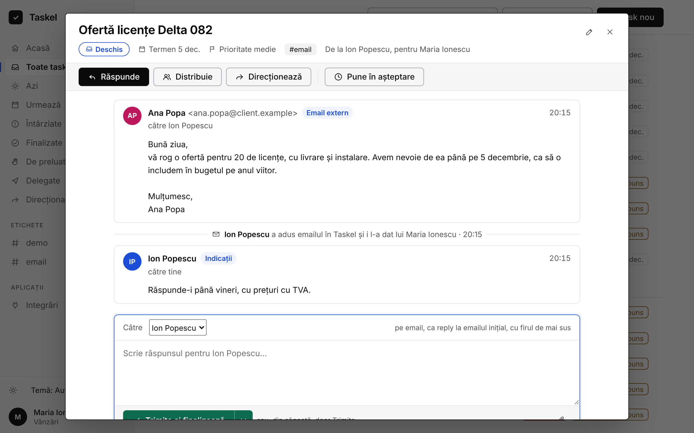
| Stare | Când | Cum ajungi aici |
|---|---|---|
| Deschis | Se lucrează la task. Este starea de pornire. | Singur, la creare; din așteptare sau din finalizat, cu Redeschide. |
| În așteptare | Nu poți continua până nu se întâmplă altceva: un răspuns, o aprobare, o livrare. | Pune în așteptare, cu motivul obligatoriu (cel mult 1000 de caractere). |
| Finalizat | Ai terminat. | Butonul verde de la răspuns. Pentru task-urile venite din email, răspunsul este obligatoriu. |
Task-ul rămâne în listele tale, marcat cu un ceas, iar motivul apare la finalul firului. Când poți continua, apasă Redeschide. Ca să schimbi motivul, apasă Schimbă motivul.
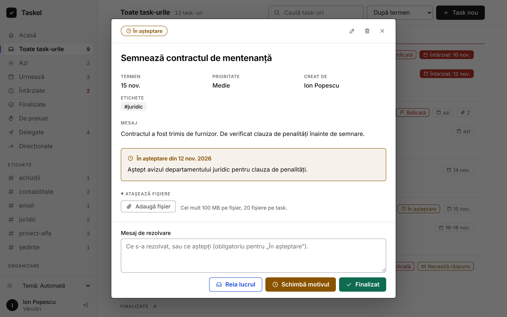
La Către vezi cui pleacă răspunsul: cui i-l datorezi (expeditorul emailului, colegul care ți-a dat sau ți-a distribuit task-ul) sau, la un task al tău, Notă pe task. Butonul verde are două variante:
Ctrl+Enter trimite și finalizează. Task-ul finalizat trece la Finalizate, iar răspunsul rămâne ultimul mesaj din fir. Dacă te-ai grăbit, apasă Redeschide.
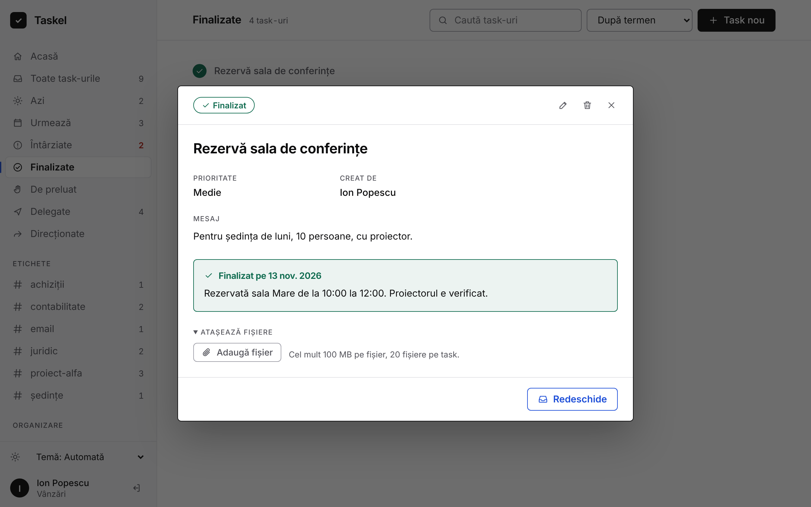
| Buton | Ce face | Cine îl vede |
|---|---|---|
| Creion · Editează | Schimbi titlul, mesajul, datele, prioritatea, etichetele. Creatorul poate schimba și persoana. | Creatorul și responsabilul |
| Persoane · Dă înapoi grupului | Renunți la un task preluat dintr-un grup; îl poate lua alt membru. | Cine l-a preluat |
| Coș · Șterge | Șterge definitiv task-ul, cu fișierele lui. Nu poate fi recuperat. | Doar creatorul |
Fișierele apar în fir, ca miniaturi, sub mesajul cu care au venit: cele ale emailului sub email, cele trimise cu un răspuns sub acel răspuns. Lista completă e la finalul ferestrei, în Fișiere, unde adaugi documente cu Adaugă fișier și le ștergi cu „×”.
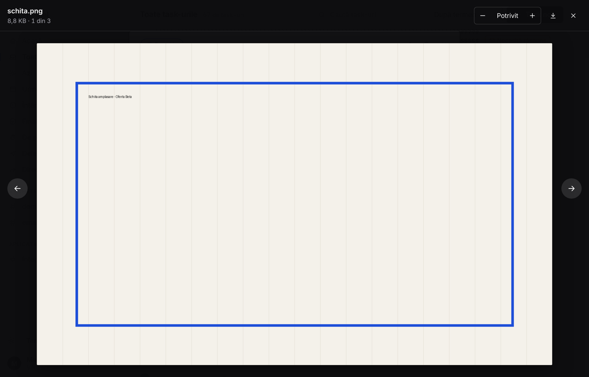
Dacă un fișier nu poate fi afișat (de exemplu, are extensia unei imagini, dar nu e o imagine), fereastra spune asta și îți oferă descărcarea.
Dacă task-ul a trecut pe la mai multe persoane, firul arată cine l-a dat cui, când și cu ce mesaj: fiecare direcționare e un rând sau, când are un mesaj, un mesaj în fir.
În câmpul Alocat către începi să scrii numele, emailul sau grupul. Apar cel mult opt potriviri; alegi cu mouse-ul sau cu săgețile și Enter. Căutarea nu ține cont de majuscule sau diacritice.
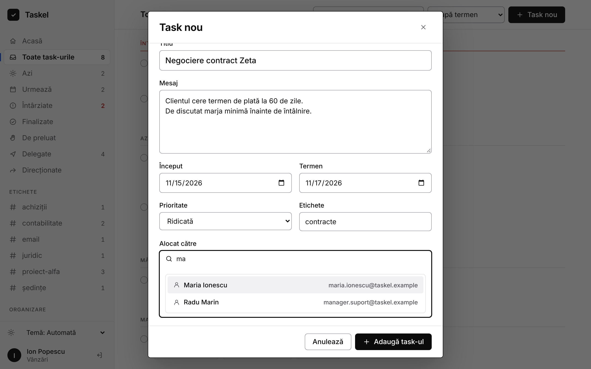
Task-ul alocat altcuiva dispare din lista ta de lucru și apare la Delegate. Rămâne al tău: îl poți modifica, realoca sau șterge.
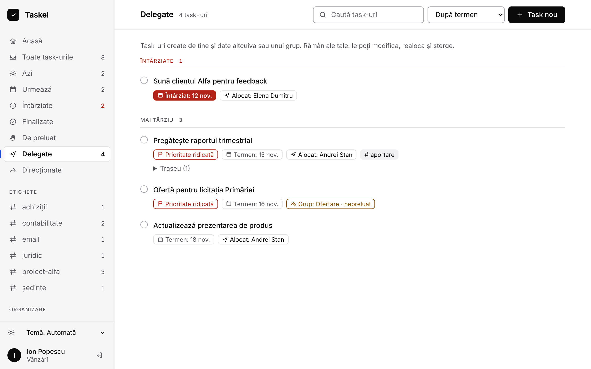
Un task dat unui grup apare la toți membrii, în vederea De preluat. Primul care apasă Preia devine responsabil, iar task-ul dispare de la ceilalți. Dacă nu îl mai poți face, deschide-l și apasă Dă înapoi grupului.
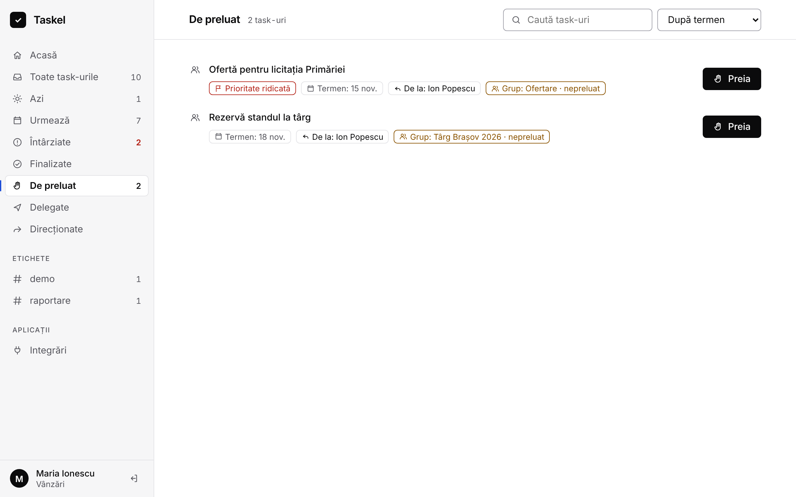
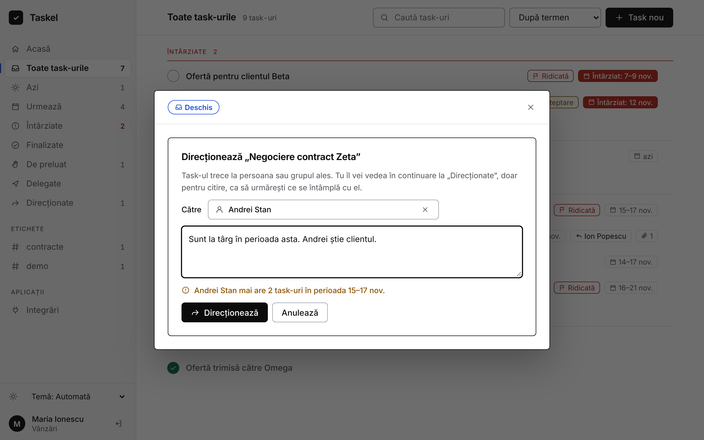
Task-ul nu mai este la tine. Îl găsești la Direcționate, unde îl poți doar citi: vezi la cine a ajuns, în ce stare este și tot traseul.
Când un task te privește pe tine, dar ai nevoie de răspunsuri de la colegi, îl distribui. Spre deosebire de direcționare, task-ul rămâne la tine: fiecare coleg primește o copie, tu aștepți răspunsurile și închizi task-ul la final.
Fiecare primește task-ul lui, deschis, cu mesajul tău, cu fișierele și cu emailul original. Task-ul tău trece În așteptare. Bara de acțiuni arată câți au răspuns, iar fiecare răspuns intră în fir ca un mesaj „A răspuns”, cu fișierele lui.
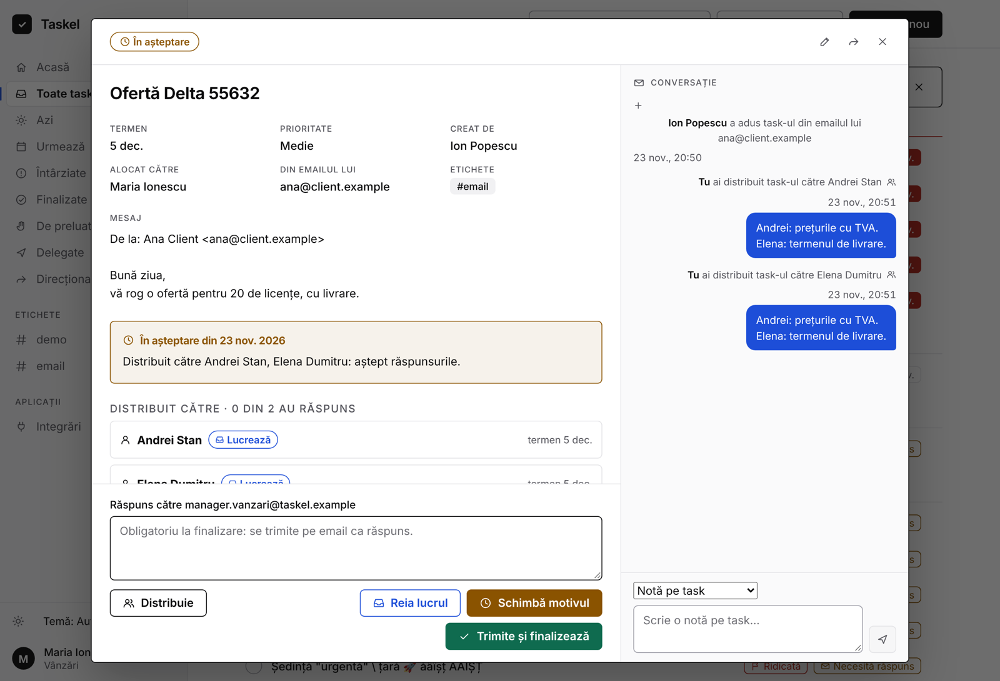
Dacă ai primit o copie, vezi sus „Distribuit de …”, iar în fir emailul și mesajul celui care ți l-a distribuit. Pentru o întrebare folosești Doar trimite; la final apeși Trimite și finalizează, cu răspunsul scris obligatoriu. Răspunsul ajunge la cel care ți-a distribuit task-ul, nu la clientul din email.
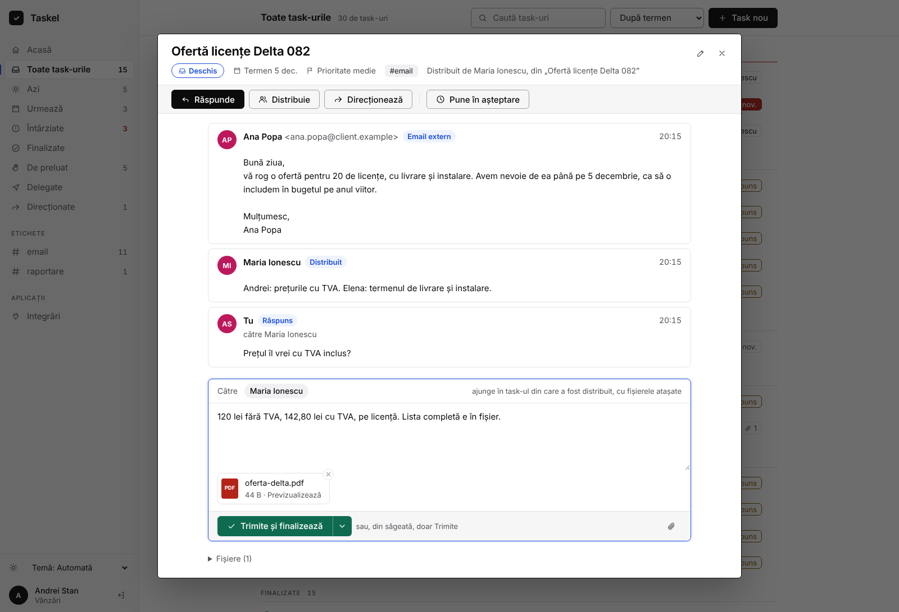
Cu Revine la mine după finalizare bifat, cel care primește task-ul nu îl poate închide de tot. Când apasă Rezolvat, înapoi la …, scrie obligatoriu ce a rezolvat, iar task-ul:
Dacă task-ul a trecut prin mai multe persoane, fiecare întoarcere urcă un singur pas, până la cel care l-a trimis primul.
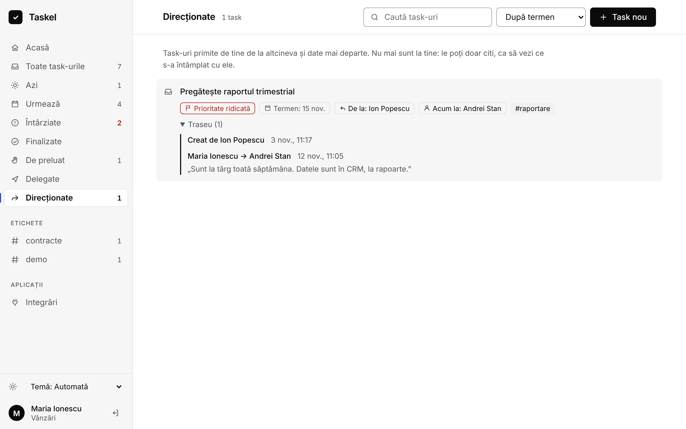
| Delegate | Direcționate | |
|---|---|---|
| Cine a creat task-ul | Tu | Altcineva |
| Ce ai făcut | L-ai dat cuiva să îl facă | L-ai primit și l-ai dat mai departe |
| Ce mai poți face | Orice: modifici, realoci, ștergi, finalizezi | Doar îl citești |
| Ești… | Citești | Editezi, schimbi starea | Direcționezi | Realoci oricui | Ștergi |
|---|---|---|---|---|---|
| Creatorul | da | da | – | da | da |
| Responsabilul (l-ai primit) | da | da | da | – | – |
| Membru al grupului (nepreluat) | da | îl poți prelua | – | – | – |
| Cel care l-a direcționat | da | – | – | – | – |
Din Outlook, un email devine task dintr-un clic. Titlul este subiectul emailului, mesajul conține expeditorul, data și textul, iar fișierele atașate emailului se atașează task-ului. Task-ul primește eticheta email.
Există două variante; folosește-o pe cea pe care ți-o recomandă administratorul:
| Add-in Outlook (recomandat) | Macro VBA | |
|---|---|---|
| Merge în | Outlook clasic și noul Outlook pentru Windows, Outlook pe web, Outlook pentru Mac | Doar Outlook clasic pentru Windows |
| Cum arată | Un panou lângă email, cu designul Taskel (luminos sau întunecat) | O fereastră deschisă de un buton din panglică |
| Emailuri odată | Emailul deschis | Toate emailurile selectate |
Dacă administratorul l-a instalat pentru toată firma, îl găsești deja în Outlook. Altfel îl adaugi tu:
În panou vezi emailul (subiect, expeditor, importanță, fișiere), apoi:
Emailul trimis primește în Outlook categoria Taskel (o etichetă mov), ca să vezi în listă ce emailuri sunt deja în Taskel. Dacă după trimitere panoul spune că emailul nu a putut fi marcat, creează o dată categoria: clic dreapta pe un email → Categorize → All Categories → New, cu numele Taskel.
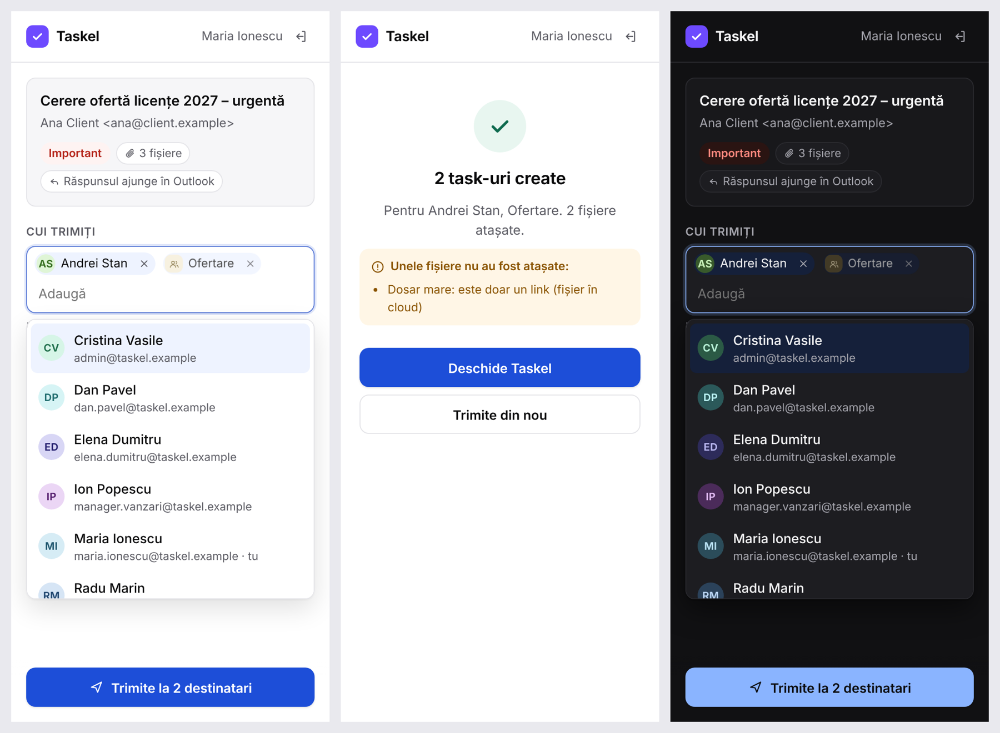
Dacă ai instalată și fereastra Trimite în Taskel (pasul 4 de la instalarea macro-ului), la apăsarea butonului din Outlook se deschide o fereastră:
Andrei Stan; Ofertare;. Backspace imediat după un nume îl șterge pe tot.Sub câmpul Către vezi câți destinatari ai ales sau ce nume nu e recunoscut; un nume nerecunoscut oprește trimiterea până îl corectezi. Emailul trimis primește în Outlook categoria Taskel, pe care macro-ul o creează singur prima dată.
Task-urile apar la tine în Delegate. Destinatarii le pot rezolva sau le pot direcționa mai departe, cu întoarcere (vezi „Task-ul care revine la tine”).
Un task venit din email se finalizează doar scriind un răspuns. La apăsarea butonului Trimite și finalizează, Taskel trimite textul pe email, ca răspuns la mesajul inițial, apoi marchează task-ul finalizat. Cu Doar trimite, răspunsul pleacă la fel, dar task-ul rămâne deschis: poți trimite, de exemplu, o confirmare de primire, iar oferta mai târziu. Către arată mereu unde pleacă răspunsul:
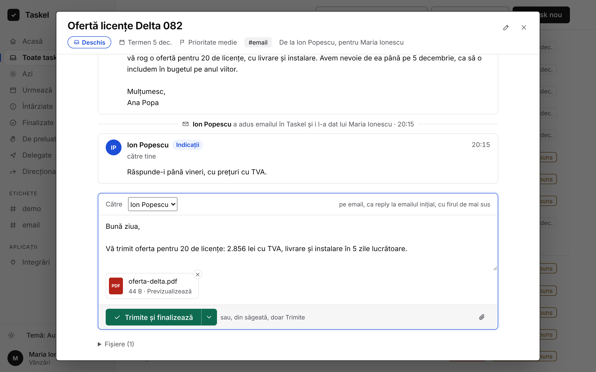
Agrafa din colțul răspunsului (Atașează la răspuns) adaugă fișiere care pleacă împreună cu el; le scoți cu „×” de pe miniatură. În lista de fișiere a task-ului apar marcate la răspuns. La o copie distribuită, fișierele ajung la cel care ți-a distribuit task-ul și apar sub răspunsul tău în fir.

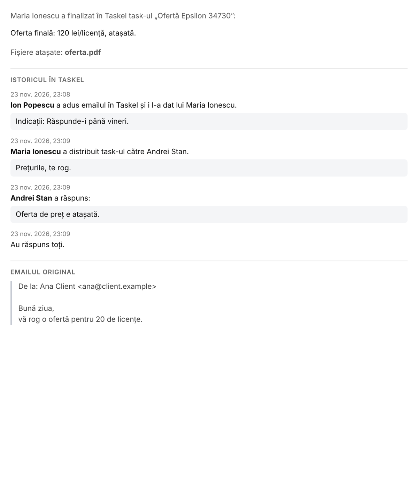
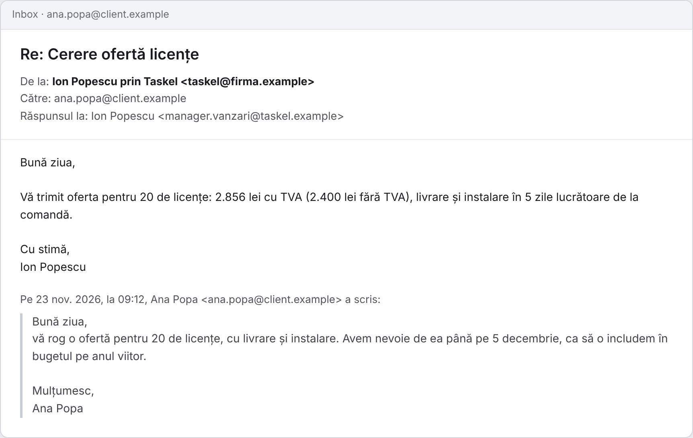
Macro-ul funcționează în Outlook clasic pentru Windows. Nu funcționează în „noul Outlook”, în Outlook pe web sau pe Mac. Fișierele TaskelOutlook.bas și TaskelSendForm.txt le primești de la administrator.
tsk_). Este afișat o singură dată.TaskelOutlook.bas. Apasă Ctrl+S și închide editorul.TaskelSendForm, apasă F7, șterge codul existent și lipește tot conținutul fișierului TaskelSendForm.txt. Formularul rămâne gol în designer. Apasă Ctrl+S.Project1.TaskelOutlook.SendToTaskel. Redenumește-l „Send to Taskel”.TaskelSendForm nu se poate deschide (lipsește, are alt nume sau codul ei e incomplet), macro-ul spune de ce, cu eroarea primită, și te întreabă dacă trimiți totuși emailul ca task al tău. Nu nu trimite nimic. Verifică numele formularului, lipește din nou tot TaskelSendForm.txt și rulează Debug → Compile.TaskelSendForm, șterge tot codul și lipește din nou TaskelSendForm.txt. Apasă Ctrl+S.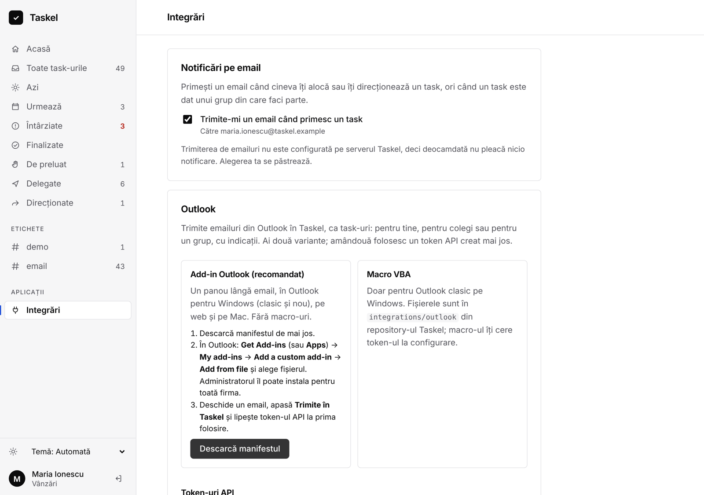
Folosire: selectezi unul sau mai multe emailuri și apeși Send to Taskel. Trimiterea aceluiași email de două ori creează două task-uri.
Primești un email când:
Emailul arată ca un card: ce s-a întâmplat („Maria Ionescu ți-a distribuit un task”), titlul task-ului, termenul (cu roșu dacă e azi sau a trecut), prioritatea și nivelul, la cine ajunge răspunsul tău, mesajul primit și butonul Deschide în Taskel. Butonul deschide direct task-ul în aplicație (după conectare, dacă nu ești conectat). Nu primești email pentru propriile acțiuni.
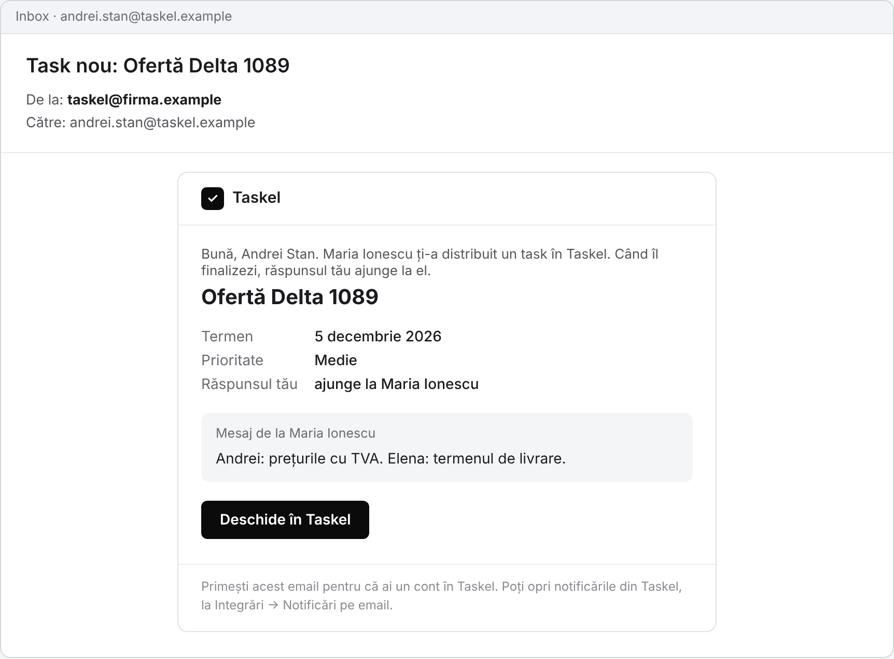
Notificările sunt pornite implicit. Le oprești sau le repornești din Integrări → Notificări pe email, cu bifa Trimite-mi un email când primesc un task. Dacă sub bifă scrie că trimiterea de emailuri nu este configurată, serverul nu trimite deocamdată nimic; alegerea ta se păstrează.
Apasă Personalizează (dreapta sus, pe Acasă). Poți elimina casete, le poți muta mai devreme sau mai târziu și poți adăuga altele din listă. Modificările se salvează pe contul tău, deci le regăsești pe orice dispozitiv. Apasă Gata când ai terminat.
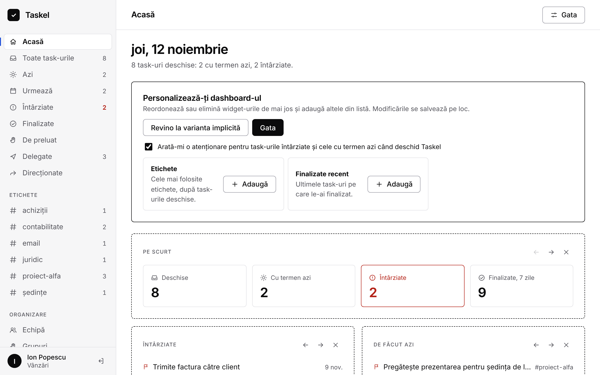
| Casetă | Ce arată |
|---|---|
| Pe scurt | Câte task-uri sunt deschise, cu termen azi, întârziate și finalizate recent. |
| Întârziate · De făcut azi · Următoarele 7 zile | Task-urile deschise din fiecare categorie. |
| Așteaptă răspunsul tău | Task-uri din email care se finalizează doar cu un răspuns. |
| Delegate de mine | Task-uri deschise date altora. |
| Task-uri deschise pe priorități | Împărțirea pe priorități. |
| Finalizate în ultimele 7 zile | Câte ai terminat în fiecare zi. |
| Etichete · Finalizate recent | Cele mai folosite etichete; ultimele task-uri terminate. |
Din lista Temă, în josul meniului, alegi: Automată (urmează setarea sistemului), Luminoasă, Întunecată, Arctic Frost (sticlă mată, luminoasă) sau Amber Glass (sticlă fumurie, caldă). Tema se ține minte pe fiecare browser în parte.
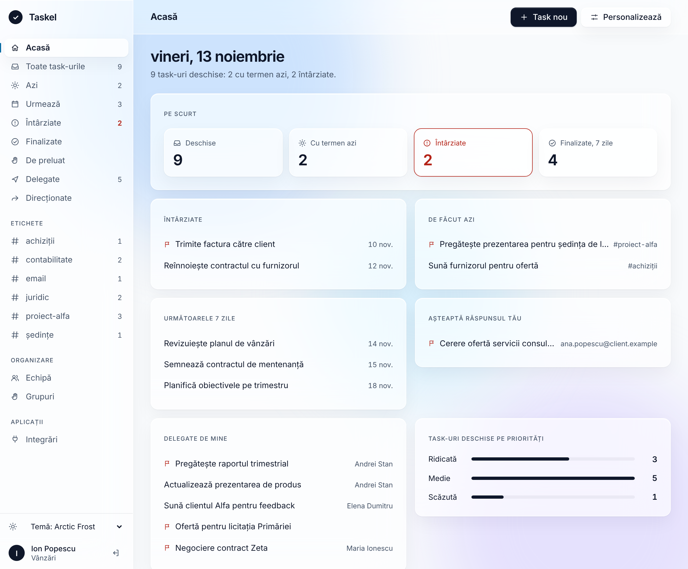
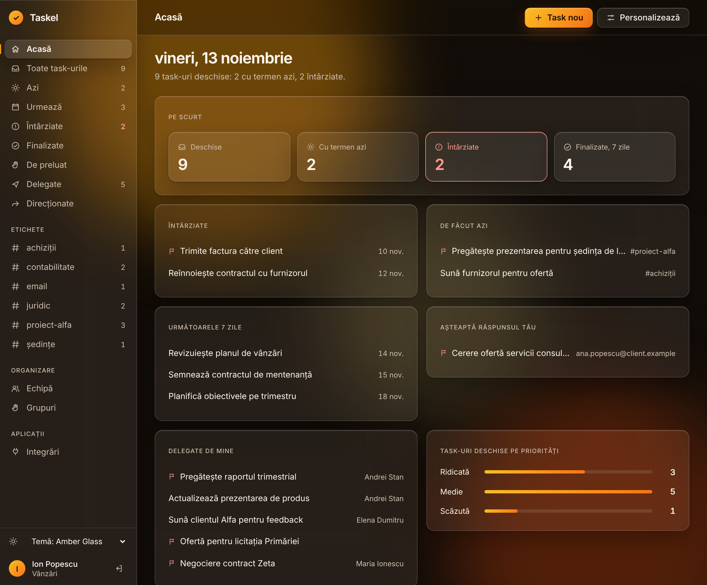
Pe telefon folosești aceeași adresă, în browser. Meniul se deschide din butonul cu trei linii din stânga sus, iar ferestrele de task ocupă tot ecranul.
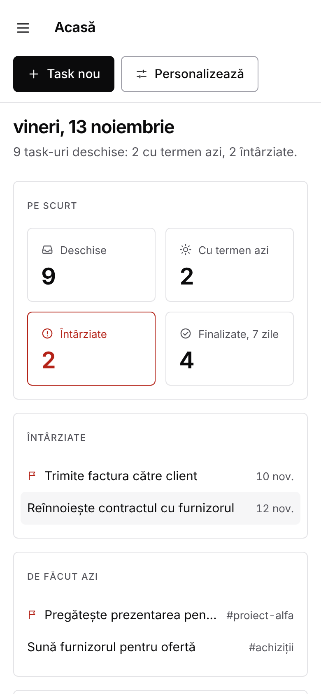
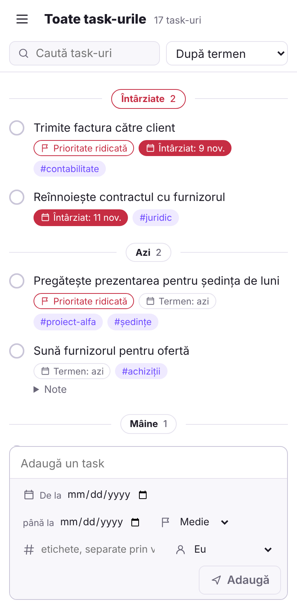
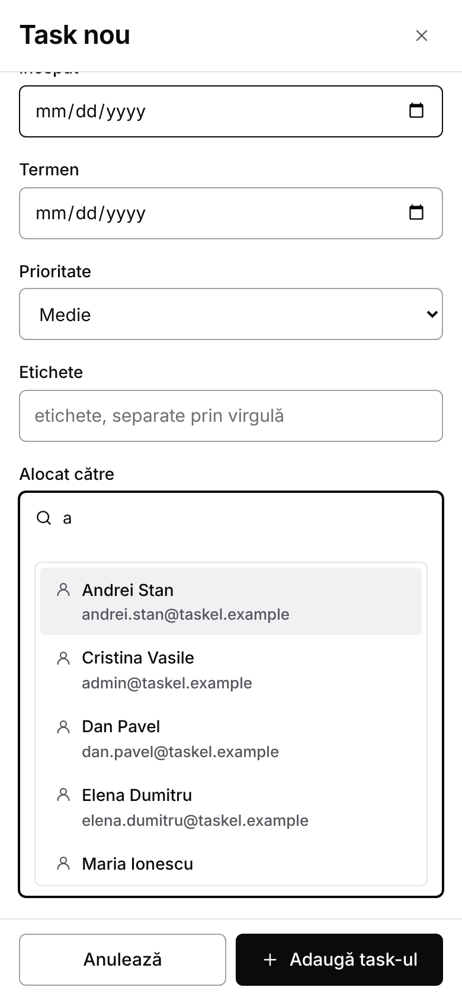
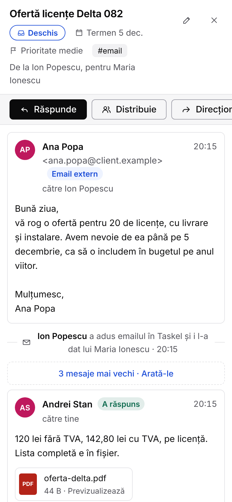
Este la Delegate. Lista „Toate task-urile” conține doar ce ai de făcut tu.
Nu. Ștergerea este definitivă, inclusiv pentru fișierele atașate.
Trebuie să scrii răspunsul către expeditor. Dacă apare un mesaj că trimiterea de emailuri nu este configurată, anunță administratorul.
Nu mai este la tine. Îl poate modifica persoana la care se află acum sau cel care l-a creat.
Apar doar persoanele care au cont în Taskel. Dacă firma folosește conturi de domeniu, colegul trebuie să se fi conectat cel puțin o dată (sau administratorul să fi importat utilizatorii).
Verifică mărimea (limita apare sub butonul de atașare) și numărul de fișiere de pe task. Un fișier foarte mare pe o conexiune lentă poate eșua; încearcă din nou.
Pentru conturile de domeniu și Keycloak, parola se schimbă acolo (Windows, respectiv pagina firmei). Pentru conturile locale, aplicația nu are deocamdată schimbare de parolă; adresează-te administratorului.